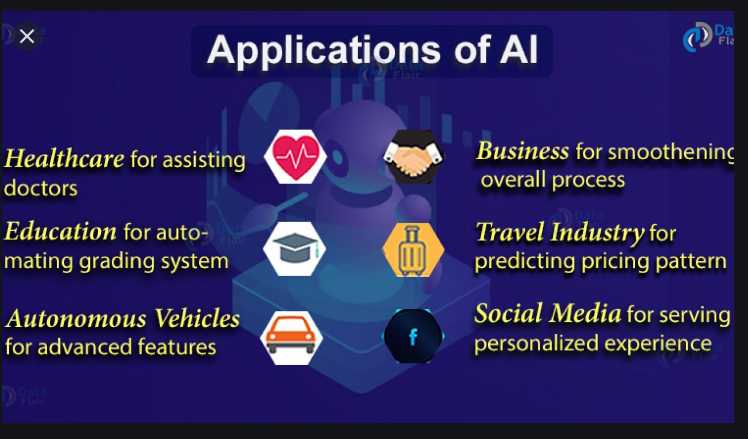

Smart assistants (like Siri and Alexa)
Disease mapping and prediction tools
Manufacturing and drone robots
Optimized, personalized healthcare treatment recommendations
Conversational bots for marketing and customer service
Robo-advisors for stock trading
Spam filters on email
Social media monitoring tools for dangerous content or false news
Song or TV show recommendations from Spotify and Netflix
